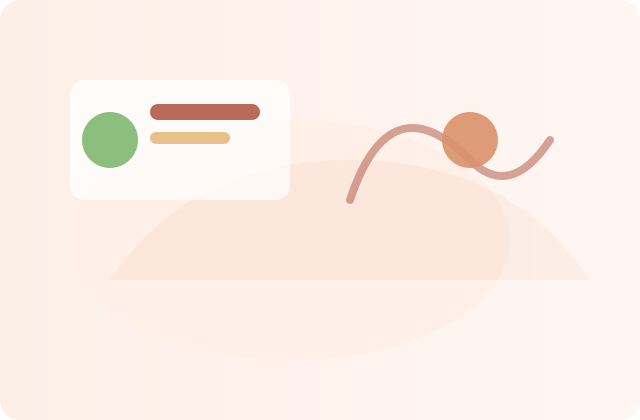

Practical services for sustained performance
Short-term interventions and longer-term partnerships that focus on habits, energy, and predictable routines.
{{PRIMARY_CTA_LABEL}}
A focused review of routines, decision points and energy drains that create the highest leverage opportunities.
Design routines that require minimal willpower and align with your schedule.
Fast cycles of planning, execution and adjustment to keep momentum.
Short consults to troubleshoot leaks and adapt plans for travel, transition, or a busy quarter.
Too busy? Here’s what people ask.
We start with micro-actions so the program reduces time-sink, not adds to it. Work is scheduled around your calendar, not the other way round.
What matters most in my work
- Transferable skills you can keep forever
- Systems that scale with your role
- Evidence-informed adjustments
Free checklist: 5 evening rituals that improve morning output
Client notes
Questions I get
How quickly will I see improvement?
Most clients notice clarity within 2–3 weeks due to focus shifts and routine tweaks.
Is there a trial session?
Yes — a 30-minute discovery call to align on goals before committing to a program.
Or email {{EMAIL}} and we’ll find a time that fits your schedule.